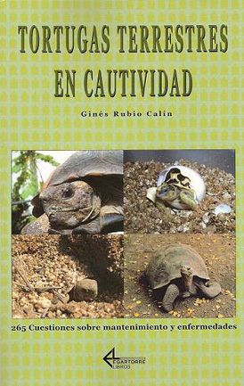

|

TORTUGAS TERRESTRES EN
CAUTIVIDAD.
265 CUESTIONES SOBRE MANTENIMIENTO Y ENFERMEDADES.
Ginés Rubio Calín
Testudinae se
complace en presentaros la última novedad editorial en castellano
sobre tortugas.
"Tortugas Terrestres
en Cautividad" es un libro elaborado por Ginés Rubio (Ginesrc),
habitual colaborador de esta página, en colaboración con Fernando
Pérez (Fernandograeco), Klara Tuset (Klaratuset) y Marcos Martínez (Murziano)
y gracias a la activa participación de los integrantes de este foro.
Este nuevo libro es
una recopilación de las preguntas más interesantes que durante años se
han ido realizando en los diferentes foros de aficionados a las
tortugas en Internet. Con más de 150 fotografías en color, nos ofrece
un recorrido práctico por todos los aspectos relacionados con el
mantenimiento y cuidados de las tortugas en cautividad; desde las
instalaciones, sistemas de iluminación, pasando por la alimentación,
incubación y enfermedades. Además incluye multitud de tablas, gráficos
y varios apéndices de gran utilidad para todos los aficionados.
Todas las preguntas
recopiladas han sido contestadas basándose en los estudios y
conocimientos más novedosos sobre las tortugas, revisando para ello
multitud de bibliografía y trabajos, tanto de autores españoles como
extranjeros, con el fin de garantizar unas respuestas rigurosas y
acordes con los avances actuales de la medicina y biología de los
quelonios.
MÁS INFORMACIÓN Y
PEDIDOS
También lo puedes
encontrar en:
La casa del libro
Librería Agricola Jerez
Librería
Rayuela
Librería Proteo
Librería Temario Oposiciones
La tienda Verde
Agapea
Oryx
Dreamers
Pessoalibros
Popular libros
|